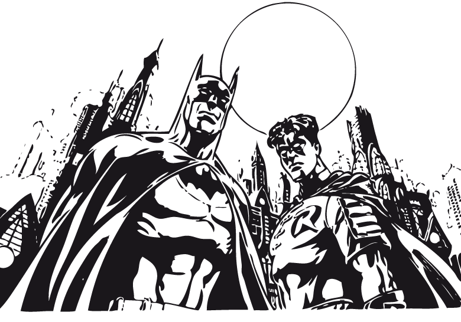

Curriculum Vitae de Bruce Wayne

Datos Personales
- Nombre completo: Bruce Wayne
- Fecha de nacimiento: 1/5/1939
- Lugar de nacimiento: Gotham City
Formación Academica
- 1956-1961: Universidad del Espantapájaros
- 1952-1956: Instituto de Dos Caras
- 1944-1952: escuela primaria del Joker
Experiencia Laboral
- 1975-1985: En el Paro
- 1965-1975: Cazavillanos y demás chusma
- 1962-1965: aprendiz de Superhéroe